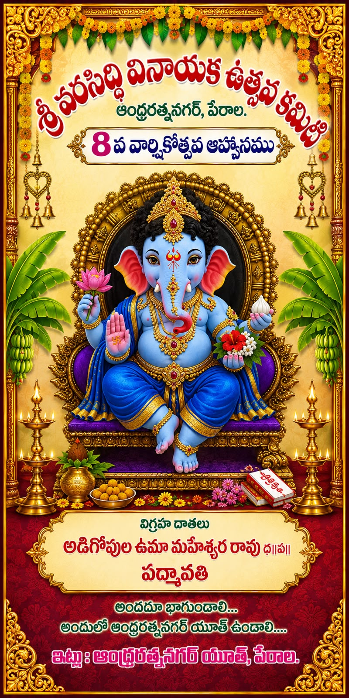

Devotion
Creating a peaceful spiritual experience through pooja, aarti and bhajans.
Celebrating the divine presence of Lord Ganesha with our entire community.

Every year, our community comes together to welcome Lord Ganesha with devotion, music, cultural programs, prasadam and seva.
విఘ్నేశ్వరుని ఆశీస్సులతో భక్తి, సంస్కృతి, సేవను ప్రతి ఒక్కరి జీవితంలోకి తీసుకురావడం మా లక్ష్యం.
Creating a peaceful spiritual experience through pooja, aarti and bhajans.
Celebrating our traditions through music, dance, art and cultural programs.
Bringing families, children, youth and elders together as one community.
Encouraging clean, safe and environmentally responsible celebrations.
Join us for every special moment.
Prana Pratishtha • Special Pooja • Aarti • Prasadam
Daily darshan, pooja, bhajans and evening aarti.
Music, Dance, Devotional performances.
Sharing food and blessings with devotees and the community.
Drawing, fancy dress, devotional activities and fun competitions.
Devotional procession, dhol and farewell to Bappa.
Replace the sample timings below with your actual committee schedule.
వక్రతుండ మహాకాయ సూర్యకోటి సమప్రభ
నిర్విఘ్నం కురుమే దేవ శుభకార్యేషు సర్వదా
Photos from our Ganesh Utsav celebrations.
 Previous Utsav
Previous Utsav
 Procession
Procession
 Maha Aarti
Maha Aarti
 Cultural Night
Cultural Night
Serving the community with devotion and dedication.
Support pooja arrangements, prasadam, cultural programs, children’s activities and community seva.

Businesses and families who help make the Utsav possible.
📍 Add your Ganesh pandal / committee address
📞 Add your committee phone number
✉️ Add your email address